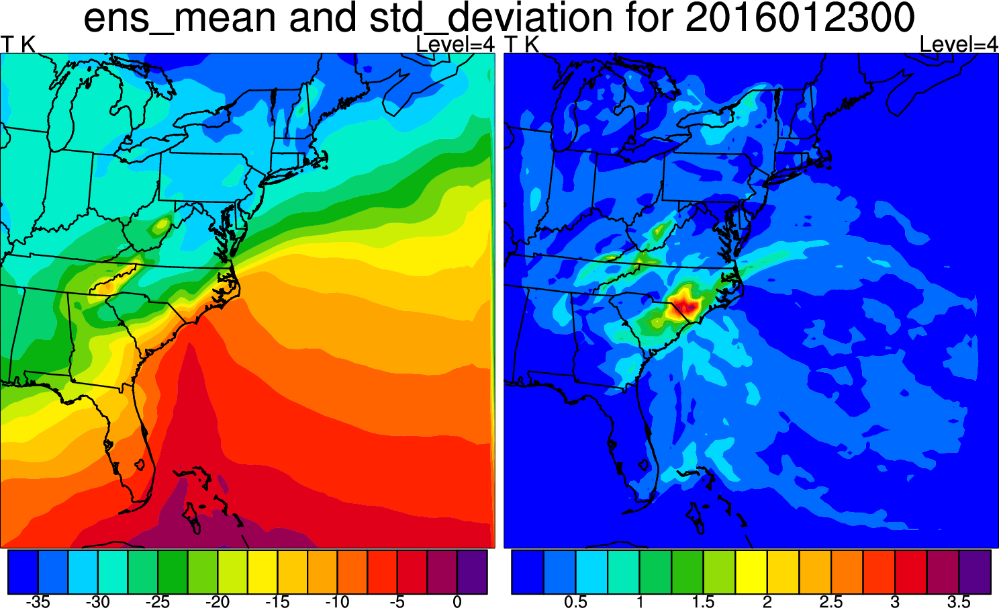
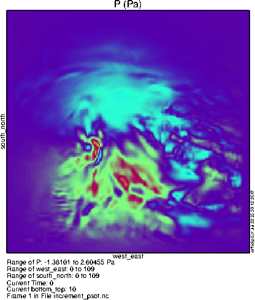

Hybrid data assimilation
Hybrid data assimilation is a combination of variational and ensemble methods of data assimilation. This lesson has exercises for both 3DENVAR and 4DENVAR.
This case utilizes a domain over the eastern United States and western atlantic ocean, 111x111 gridpoints, 41 vertical levels, and 24km resolution (it can be found at /classroom/wrfhelp/DATA/WRFDA/hybrid). The exact area of the domain is shown at right. This case will be used both for 3DENVAR and 4DENVAR.
It features a major blizzard which produced a record amount of snowfall in some cities from January 22-24, 2016.
|
 |
Hybrid data assimilation is a combination of variational and ensemble methods of data assimilation. This lesson has exercises for both 3DENVAR and 4DENVAR.
Reference: Download the tutorial presentation
3DENVAR
Source code
Get the pre-compiled code, if you have not done so.
>WRFDA/var/build/gen_be_ensmean.exe
WRFDA/var/build/gen_be_ep2.exe
WRFDA/var/build/gen_be_vertloc.exe
WRFDA/var/build/da_wrfvar.exe
are the four executables that will be used in this session.
Choice of your working directory
We recommend running each session in a separate directory, so that it will be easier to check for the necessary input files and look for what output files are created after a successful run.
mkdir /classroom/users/${USER}/DA/hybrid
cd /classroom/users/${USER}/DA/hybrid
Input data
The procedure for hybrid 3DENVAR assimilation is much the same as Running WRFDA for 3DVAR, except for some more input files and namelist.input settings.
In addition to the basic input files (LANDUSE.TBL, ob.ascii, be.dat) that you should have been familiar with by now, an ensemble mean (which will be the fg for the hybrid application) and ensemble perturbations are the extra required input files.
- ensemble mean
Usually, the first step of hybrid data assimilation is to prepare a set of ensembles. However, this step is time-consuming, so a set of 10 ensemble forecasts is provided under the /classroom/wrfhelp/DATA/WRFDA/hybrid/fc/2016012300 directory.
ls -al /classroom/wrfhelp/DATA/WRFDA/hybrid/fc/2016012300/
-rw-r--r-- 1 19974 instructor 41525452 Jul 21 16:52 wrfout_d01_2016-01-23_00:00:00.e001
-rw-r--r-- 1 19974 instructor 41525452 Jul 21 16:52 wrfout_d01_2016-01-23_00:00:00.e002
-rw-r--r-- 1 19974 instructor 41525452 Jul 21 16:52 wrfout_d01_2016-01-23_00:00:00.e003
-rw-r--r-- 1 19974 instructor 41525452 Jul 21 16:52 wrfout_d01_2016-01-23_00:00:00.e004
-rw-r--r-- 1 19974 instructor 41525452 Jul 21 16:52 wrfout_d01_2016-01-23_00:00:00.e005
-rw-r--r-- 1 19974 instructor 41525452 Jul 21 16:52 wrfout_d01_2016-01-23_00:00:00.e006
-rw-r--r-- 1 19974 instructor 41525452 Jul 21 16:52 wrfout_d01_2016-01-23_00:00:00.e007
-rw-r--r-- 1 19974 instructor 41525452 Jul 21 16:52 wrfout_d01_2016-01-23_00:00:00.e008
-rw-r--r-- 1 19974 instructor 41525452 Jul 21 16:52 wrfout_d01_2016-01-23_00:00:00.e009
-rw-r--r-- 1 19974 instructor 41525452 Jul 21 16:52 wrfout_d01_2016-01-23_00:00:00.e010
-rw-r--r-- 1 19974 instructor 41525452 Jul 21 16:55 wrfout_d01_2016-01-23_00:00:00.mean
-rw-r--r-- 1 19974 instructor 41525452 Jul 21 16:55 wrfout_d01_2016-01-23_00:00:00.vari
wrfout_d01_2016-01-23_00:00:00.e* are a set of 12-hour WRF forecasts (valid at 2016012300, initialized at 2016012212).
wrfout_d01_2016-01-23_00:00:00.mean and wrfout_d01_2016-01-23_00:00:00.vari are two template files that will be overwritten by a program that calculates ensemble mean from ensemble forecasts.
- Copy ensemble forecasts and template files to your working directory.
cp -r /classroom/wrfhelp/DATA/WRFDA/hybrid/fc/2016012300/ .
- Edit gen_be_ensmean_nl.nl (or copy it from /classroom/wrfhelp/DATA/WRFDA/hybrid/gen_be_ensmean_nl.nl)
vi gen_be_ensmean_nl.nl
&gen_be_ensmean_nl
directory = './2016012300'
filename = 'wrfout_d01_2016-01-23_00:00:00'
num_members = 10
nv = 7
cv = 'U', 'V', 'W', 'PH', 'T', 'MU', 'QVAPOR'
/
/classroom/users/${USER}/DA/WRFDA/var/build/gen_be_ensmean.exe
2016012300/wrfout_d01_2016-01-23_00:00:00.mean is the ensemble mean
2016012300/wrfout_d01_2016-01-23_00:00:00.vari is the ensemble variance. This file is for diagnostic purposes only, and will not be used in assimilation.
You may use the NCL script /classroom/wrfhelp/DATA/WRFDA/hybrid/ncl/ens_mean_std_dev.ncl to make some plots.
cp /classroom/wrfhelp/DATA/WRFDA/hybrid/ncl/ens_mean_std_dev.ncl .
cp /classroom/wrfhelp/DATA/WRFDA/hybrid/ncl/WRF_contributed.ncl.test .
Edit ens_mean_std_dev.ncl to set the proper date and path path
dir = "/classroom/users/$USER/DA/hybrid/" + date + "/"
ncl ens_mean_std_dev.ncl
display mean_std_dev.pdf
This script displays the mean and standard deviation for the ensemble at a single level for a single variable. You can change the level and variable by changing these lines a bit further down in the script:
var = "U"
kl = 24
U, V, W, P, and QVAPOR are some other interesting fields to look at. The plot at right uses var = "T" and kl = 4.
|
 |
gen_be_ep2.exe requires 4 command arguments (DATE, NUM_MEMBER, DIRECTORY, FILENAME) as defined below:
/classroom/users/${USER}/DA/WRFDA/var/build/gen_be_ep2.exe 2016012300 10 ../../2016012300 wrfout_d01_2016-01-23_00:00:00
- Check the output files generated by gen_be_ep2.exe
A list of binary files will be created under 2016012300/ep directory. Among them, tmp.e* are temporary scratch files that can be removed.
You may use the NCL script /classroom/wrfhelp/DATA/WRFDA/hybrid/ncl/ens_perturbations.ncl to make some plots.
cp /classroom/wrfhelp/DATA/WRFDA/hybrid/ncl/ens_perturbations.ncl .
cp /classroom/wrfhelp/DATA/WRFDA/hybrid/ncl/WRF_contributed.ncl.test .
Edit ens_perturbations.ncl to set the proper date and path.
directory = "/classroom/users/$USER/DA/hybrid/" + date
ncl ens_perturbations.ncl
display ens_perturbations.pdf
Again, you can modify the script to look at different vertical levels and variables by changing these settings:
var = "U"
kl = 32
Depending on what variable you display, you may have to change the color contour settings "cont_min", "cont_max", and "cont_spacing" as well to get a nice-looking plot.
Run gen_be_vertloc.exe
gen_be_vertloc.exe generates the input file for vertical localization. This program requires one command-line argument: the number of vertical levels of the model configuration (same value as e_vert in the namelist; for the tutorial example, this should be 41
cd /classroom/users/${USER}/DA/hybrid
/classroom/users/${USER}/DA/WRFDA/var/build/gen_be_vertloc.exe 41
This generates a file be.vertloc.dat which will be used by WRFDA.
Run WRFDA in hybrid mode
cd /classroom/users/${USER}/DA/hybrid
ln -fs 2016012300/ep ./ep # ensemble perturbation files should be under the ep subdirectory
ln -fs 2016012300/wrfout_d01_2016-01-23_00:00:00.mean ./fg # first guess is an ensemble forecast mean
ln -fs /classroom/users/${USER}/DA/WRFDA/run/LANDUSE.TBL .
ln -sf /classroom/users/${USER}/DA/obsproc_fgat/obs_gts_2016-01-23_00:00:00.FGAT ob.ascii
# we created the observation file during the OBSPROC exercise, if you did not finish you can find a copy here: /classroom/wrfhelp/DATA/WRFDA/hybrid/ob/2016012300/ob.ascii
ln -fs /classroom/wrfhelp/DATA/WRFDA/hybrid/be/be.dat ./be.dat# 3DENVAR uses a combination of static and ensemble-based background error. The static portion, contained in be.dat, is the same kind used in other assimilation types we have already demonstrated.
Edit namelist.input (a sample file is provided as /classroom/wrfhelp/DATA/WRFDA/hybrid/namelist.input)
cp /classroom/wrfhelp/DATA/WRFDA/hybrid/namelist.input .
vi namelist.input
Pay special attention to the following hybrid-related settings:
&wrfvar7
je_factor = 2.0
/
&wrfvar16
ensdim_alpha = 10 # hybrid mode is activated when ensdim_alpha is larger than zero.
alphacv_method = 2
alpha_corr_scale = 500.0
/
mpirun -np 6 /classroom/users/${USER}/DA/WRFDA/var/build/da_wrfvar.exe
View the different output files to see how they differ from a 3DVAR assimilation run. For example, in cost_fn and grad_fn, you will see the ensemble terms of the cost function and gradient, respectively.
4DENVAR
4DENVAR is a hybrid ensemble-variational data assimilation method that uses ensemble input files at several different times to allow observations to be assimilated at the appropriate time rather than assuming the observations (which may be taken at times different from the analysis time) are all at the analysis time. The process is very similar to the 3DENVAR method described above, but the ensemble steps must be run for several different times.
Create a new working directory for this practice
mkdir /classroom/users/${USER}/DA/hybrid_4denvar
cd /classroom/users/${USER}/DA/hybrid_4denvar
Input data
This 4DENVAR test case will be the same as the 3DENVAR case. For 4DENVAR, you will have multiple "first guess" files, as well as multiple sets of ensemble forecast files, valid at different times around the analysis time. In this case, the analysis time is still 2016012300, but we have ensemble output from 2016012221, 2016012222, 2016012223, 2016012300, 2016012301, 2016012302, and 2016012303.
ls -al /classroom/wrfhelp/DATA/WRFDA/hybrid/fc/2016012*/
/classroom/wrfhelp/DATA/WRFDA/hybrid/fc/2016012221/:
total 486680
drwxr-sr-x 2 19974 instructor 4096 Jul 21 16:54 .
drwxr-sr-x 9 19974 instructor 4096 Jul 21 16:20 ..
-rw-r--r-- 1 19974 instructor 41525452 Jul 21 16:52 wrfout_d01_2016-01-22_21:00:00.e001
-rw-r--r-- 1 19974 instructor 41525452 Jul 21 16:52 wrfout_d01_2016-01-22_21:00:00.e002
...
-rw-r--r-- 1 19974 instructor 41525452 Jul 21 16:52 wrfout_d01_2016-01-22_21:00:00.e010
-rw-r--r-- 1 19974 instructor 41525452 Jul 21 16:54 wrfout_d01_2016-01-22_21:00:00.mean
-rw-r--r-- 1 19974 instructor 41525452 Jul 21 16:54 wrfout_d01_2016-01-22_21:00:00.vari
/classroom/wrfhelp/DATA/WRFDA/hybrid/fc/2016012222/:
total 486680
drwxr-sr-x 2 19974 instructor 4096 Jul 21 16:55 .
drwxr-sr-x 9 19974 instructor 4096 Jul 21 16:20 ..
-rw-r--r-- 1 19974 instructor 41525452 Jul 21 16:52 wrfout_d01_2016-01-22_22:00:00.e001
-rw-r--r-- 1 19974 instructor 41525452 Jul 21 16:52 wrfout_d01_2016-01-22_22:00:00.e002
...
-rw-r--r-- 1 19974 instructor 41525452 Jul 21 16:52 wrfout_d01_2016-01-22_22:00:00.e010
-rw-r--r-- 1 19974 instructor 41525452 Jul 21 16:55 wrfout_d01_2016-01-22_22:00:00.mean
-rw-r--r-- 1 19974 instructor 41525452 Jul 21 16:55 wrfout_d01_2016-01-22_22:00:00.vari
/classroom/wrfhelp/DATA/WRFDA/hybrid/fc/2016012223/:
total 486680
drwxr-sr-x 2 19974 instructor 4096 Jul 21 16:55 .
drwxr-sr-x 9 19974 instructor 4096 Jul 21 16:20 ..
-rw-r--r-- 1 19974 instructor 41525452 Jul 21 16:52 wrfout_d01_2016-01-22_23:00:00.e001
-rw-r--r-- 1 19974 instructor 41525452 Jul 21 16:52 wrfout_d01_2016-01-22_23:00:00.e002
-rw-r--r-- 1 19974 instructor 41525452 Jul 21 16:52 wrfout_d01_2016-01-22_23:00:00.e003
...
etc.
...
wrfout_d01_2016-01-22_21:00:00.e*, wrfout_d01_2016-01-22_22:00:00.e*, wrfout_d01_2016-01-22_23:00:00.e*, etc. are a set of WRF forecasts (initialized at 2016012212) which are valid at 2016012221, 2016012222, 2016012223, etc.
As before, the ".mean" and ".vari" files are template files that will be overwritten by gen_be_ensmean.exe
- Copy ensemble forecasts and template files to your working directory.
cp -r /classroom/wrfhelp/DATA/WRFDA/hybrid/fc/2016012* .
The copy process may take a few minutes due to the large amount of data.
Edit gen_be_ensmean_nl.nl (or copy it from /classroom/wrfhelp/DATA/WRFDA/hybrid/gen_be_ensmean_nl.nl).
vi gen_be_ensmean_nl.nl
&gen_be_ensmean_nl
directory = './2016012221'
filename = 'wrfout_d01_2016-01-22_21:00:00'
num_members = 10
nv = 7
cv = 'U', 'V', 'W', 'PH', 'T', 'MU', 'QVAPOR'
/
/classroom/users/${USER}/DA/WRFDA/var/build/gen_be_ensmean.exe
As before, you may use the NCL script /classroom/wrfhelp/DATA/WRFDA/hybrid/ncl/ens_mean_std_dev.ncl to make some plots of the ensemble statistics.
cp /classroom/wrfhelp/DATA/WRFDA/hybrid/ncl/ens_mean_std_dev.ncl .
cp /classroom/wrfhelp/DATA/WRFDA/hybrid/ncl/WRF_contributed.ncl.test .
Edit ens_mean_std_dev.ncl to set the proper date (2016012221 for this time) and path
dir = "/classroom/users/$USER/DA/hybrid_4denvar/" + date + "/"
ncl ens_mean_std_dev.ncl
display mean_std_dev.pdf
You must now do the same step for every other first guess time:
vi gen_be_ensmean_nl.nl
&gen_be_ensmean_nl
directory = './2016012222'
filename = 'wrfout_d01_2016-01-22_22:00:00'
num_members = 10
nv = 7
cv = 'U', 'V', 'W', 'PH', 'T', 'MU', 'QVAPOR'
/
/classroom/users/${USER}/DA/WRFDA/var/build/gen_be_ensmean.exe
vi gen_be_ensmean_nl.nl
&gen_be_ensmean_nl
directory = './2016012223'
filename = 'wrfout_d01_2016-01-22_23:00:00'
num_members = 10
nv = 7
cv = 'U', 'V', 'W', 'PH', 'T', 'MU', 'QVAPOR'
/
/classroom/users/${USER}/DA/WRFDA/var/build/gen_be_ensmean.exei
...
And so on for 2016012300, 2016012301, 2016012302, and 2016012303
gen_be_ep2.exe requires 4 command arguments (DATE, NUM_MEMBER, DIRECTORY, FILENAME) as defined below:
/classroom/users/${USER}/DA/WRFDA/var/build/gen_be_ep2.exe 2016012221 10 ../../2016012221 wrfout_d01_2016-01-22_21:00:00
- Check the output files generated by gen_be_ep2.exe
A list of binary files will be created under 2016012300/ep directory.
Again, you may use the NCL script /classroom/wrfhelp/DATA/WRFDA/hybrid/ncl/ens_perturbations.ncl to make some plots.
As before, you must run this step for each first guess time. Each step should take less than a minute to run.
cd /classroom/users/${USER}/DA/hybrid_4denvar
mkdir -p 2016012222/ep
cd 2016012222/ep
/classroom/users/${USER}/DA/WRFDA/var/build/gen_be_ep2.exe 2016012222 10 ../../2016012222 wrfout_d01_2016-01-22_22:00:00
cd /classroom/users/${USER}/DA/hybrid_4denvar
mkdir -p 2016012223/ep
cd 2016012223/ep
/classroom/users/${USER}/DA/WRFDA/var/build/gen_be_ep2.exe 2016012223 10 ../../2016012223 wrfout_d01_2016-01-22_23:00:00
cd /classroom/users/${USER}/DA/hybrid_4denvar
mkdir -p 2016012300/ep
cd 2016012300/ep
/classroom/users/${USER}/DA/WRFDA/var/build/gen_be_ep2.exe 2016012300 10 ../../2016012300 wrfout_d01_2016-01-23_00:00:00
cd /classroom/users/${USER}/DA/hybrid_4denvar
mkdir -p 2016012301/ep
cd 2016012301/ep
/classroom/users/${USER}/DA/WRFDA/var/build/gen_be_ep2.exe 2016012301 10 ../../2016012301 wrfout_d01_2016-01-23_01:00:00
cd /classroom/users/${USER}/DA/hybrid_4denvar
mkdir -p 2016012302/ep
cd 2016012302/ep
/classroom/users/${USER}/DA/WRFDA/var/build/gen_be_ep2.exe 2016012302 10 ../../2016012302 wrfout_d01_2016-01-23_02:00:00
cd /classroom/users/${USER}/DA/hybrid_4denvar
mkdir -p 2016012303/ep
cd 2016012303/ep
/classroom/users/${USER}/DA/WRFDA/var/build/gen_be_ep2.exe 2016012303 10 ../../2016012303 wrfout_d01_2016-01-23_03:00:00
Run gen_be_vertloc.exe
As with 3DENVAR, run gen_be_vertloc.exe to generate the input file for vertical localization. This step only needs to be run once, since the file is not time-dependent.
cd /classroom/users/${USER}/DA/hybrid_4denvar
/classroom/users/${USER}/DA/WRFDA/var/build/gen_be_vertloc.exe 41
Run WRFDA in hybrid mode
cd /classroom/users/${USER}/DA/hybrid_4denvar
ln -fs 2016012221/ep ./ep01 # need an "ep" directory for each time
ln -fs 2016012222/ep ./ep02
ln -fs 2016012223/ep ./ep03
ln -fs 2016012300/ep ./ep04
ln -fs 2016012301/ep ./ep05
ln -fs 2016012302/ep ./ep06
ln -fs 2016012303/ep ./ep07
ln -fs 2016012300/wrfout_d01_2016-01-23_00:00:00.mean ./fg
ln -fs 2016012221/wrfout_d01_2016-01-22_21:00:00.mean ./fg01 # need an additional first guess file for each time
ln -fs 2016012222/wrfout_d01_2016-01-22_22:00:00.mean ./fg02
ln -fs 2016012223/wrfout_d01_2016-01-22_23:00:00.mean ./fg03
ln -fs 2016012300/wrfout_d01_2016-01-23_00:00:00.mean ./fg04
ln -fs 2016012301/wrfout_d01_2016-01-23_01:00:00.mean ./fg05
ln -fs 2016012302/wrfout_d01_2016-01-23_02:00:00.mean ./fg06
ln -fs 2016012303/wrfout_d01_2016-01-23_03:00:00.mean ./fg07
ln -fs /classroom/users/${USER}/DA/WRFDA/run/LANDUSE.TBL .
# we created the observation files during the OBSPROC exercise, if you did not finish you should go back and complete the exercise
ln -sf /classroom/users/${USER}/DA/obsproc_fgat/obs_gts_2016-01-22_21:00:00.FGAT ob01.ascii
ln -sf /classroom/users/${USER}/DA/obsproc_fgat/obs_gts_2016-01-22_22:00:00.FGAT ob02.ascii
ln -sf /classroom/users/${USER}/DA/obsproc_fgat/obs_gts_2016-01-22_23:00:00.FGAT ob03.ascii
ln -sf /classroom/users/${USER}/DA/obsproc_fgat/obs_gts_2016-01-23_00:00:00.FGAT ob04.ascii
ln -sf /classroom/users/${USER}/DA/obsproc_fgat/obs_gts_2016-01-23_01:00:00.FGAT ob05.ascii
ln -sf /classroom/users/${USER}/DA/obsproc_fgat/obs_gts_2016-01-23_02:00:00.FGAT ob06.ascii
ln -sf /classroom/users/${USER}/DA/obsproc_fgat/obs_gts_2016-01-23_03:00:00.FGAT ob07.ascii
ln -fs /classroom/wrfhelp/DATA/WRFDA/hybrid/be/be.dat ./be.dat
Edit namelist.input (a sample file is provided as /classroom/wrfhelp/DATA/WRFDA/hybrid/namelist.input)
cp /classroom/wrfhelp/DATA/WRFDA/hybrid/namelist.input .
vi namelist.input
Edit the appropriate settings to set up for 4DENVAR, rather than 3DENVAR
&wrfvar3
num_fgat_time = 7, # The number of first guess times is 7 for this practice case, 3 before the analysis time and 3 after
/
&wrfvar16
use_4denvar = .true. # hybrid mode is activated when ensdim_alpha is larger than zero.
ensdim_alpha = 10
/
mpirun -np 6 /classroom/users/${USER}/DA/WRFDA/var/build/da_wrfvar.exe
View the different output files to see how they differ from a 3DENVAR assimilation run. For example, in cost_fn and grad_fn, you will see the ensemble terms of the cost function and gradient, respectively.
Other practice
|
Do a pseudo-single obs test (PSOT) like we learned in a previous exercise. You can run this test on both the 3DENVAR and 4DENVAR case. Edit the following namelist options to run the test:
&wrfvar15
num_pseudo = 1,
pseudo_x = 50.0,
pseudo_y = 50.0,
pseudo_z = 10.0,
pseudo_err = 1.0,
pseudo_val = 1.0,
/
. . .
&wrfvar19
pseudo_var = 'u'
/
mpirun -np 1 /classroom/users/${USER}/DA/WRFDA/var/build/da_wrfvar.exe
ncdiff -v U,V,T,QVAPOR,MU,P,PSFC wrfvar_output fg increment.nc
ncview increment.nc
To the right you can see what the lowest level pressure perturbation should look like. Notice the differences from the basic 3dvar case due to the BE contribution from the ensemble; instead of a featureless blob, the increment from a single observation can be quite complex!
|
 |
Try different settings like the ones below, then run a PSOT to see how they influence the background error statistics.
Ensemble covariance weighting factor (je): try
je_factor = 10.0 (jb = je_factor/(je_factor - 1), so jb = 1.11 in this example)
je_factor = 1.25 (jb = 5)
je_factor = 1.1 (jb = 11)
Hybrid covariance localization scale (alpha_corr_scale): try
alpha_corr_scale = 200.0
alpha_corr_scale = 1500.0
Try setting ensdim_alpha = 0, and compare the results.
You have now completed the WRFDA hybrid assimilation tutorial. You can now move on to the next exercise.
|
{kind=link}
{kind=link}
{kind=link}